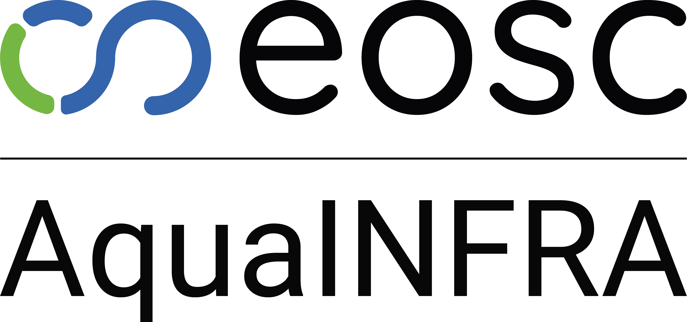

01

AGILE 2026 Poster
Operationalising the Data-to-Knowledge Package Concept:
Visualising FAIR Workflows Across Three Environmental Use Cases
Department of Geodesy, Bochum University of Applied Sciences, Bochum, Germany
Correspondence: Sadra Matmir sadra.matmir@hs-bochum.de
02
Dasymetric Population Refinement in the Elbe River Sub-basins
03